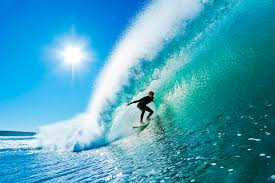

Mis Hobbies

Leer
Me gusta leer, especialmente libros de ficción, acción y aventura pero también me gusta libros de autoayuda, filosofía, etc
Surfear
Me gusta surfear, de preferencia en el verano ya que en invierno hace frío y no me gusta usar wetsuit

Coding
Desde hace ya unos años empece conla curiosidad por la programación. Ahora estoy haciendo un proyecto de web para mi curso en codeable.